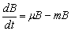
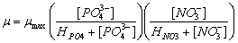
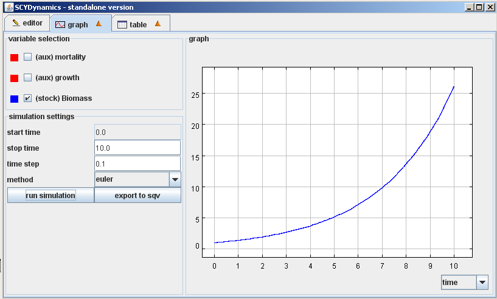
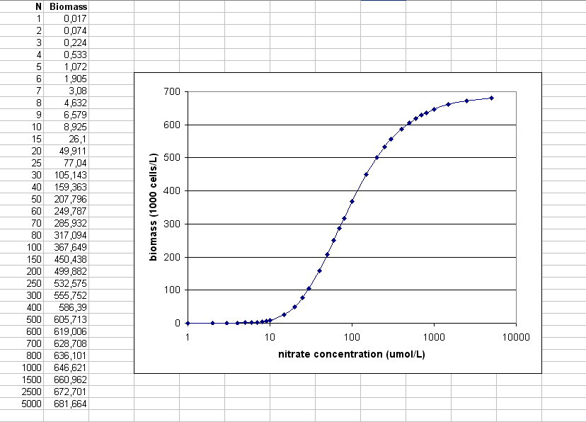

Lihtsal mudelil on üks uurimisobjekt: biomass (fütoplanktoni kasv). Biomassi suurenemine sõltub nitraadi (NO3-) ja fosfaadi (PO43-) kontsentratsioonidest. Muutust fütoplanktoni biomassis B võib kirjeldada kui kasvu (µ) ja suremuse (m) funktsiooni:
Kus µ (efektiivne kasvukiirus) on valemina defineeritud kui:
Kus [PO43-] ja [NO3-] osutavad fosfaadi ja nitraadi kontsentratsioonidele vees ning HPO4 ja HNO3 on vastavalt fosfaadi ja lämmastiku poolküllastuskonstandid (half-saturation constants). Poolküllastuskonstant näitab fütoplanktoni liikide afiinsust toitaine suhtes. Madalam poolküllastuskonstant näitab suuremat afiinsust. Afiinsus sõltub muuhulgas ka kasvuks vajaliku ressursi hulgast. Kuna fütoplanktoni rakk sisaldab ~16 korda vähem P kui N (vastavalt Redfieldi suhtarvule), on PO43- poolküllastuskonstant tüüpiliselt madalam kui NO3-. Samuti väheneb biomass suremuse (konstant) tõttu.
m: 0.59 d-1
µmax: 1.35 d-1
HPO4: 0.2 µmol L-1
HNO3: 5.6 µmol L-1
Selle lihtsa SCYDynamics mudeliga saavad õpilased muuta lämmastiku ja fosfaadi kontsentratsioone (märgitud kui konstandid N ja P). Afiinsuse väärtus ja maksimaalne kasvukiirus on bioloogilised konstandid, mida ei tohiks muuta. Mudel töötab järgmiselt. Kui ressursi kontsentratsioon on suurem poolküllastuskonstandist, läheneb kasv µmax, -le. Kui ressursi kontsentratsioon on poolküllastuskonstandist madalam, läheneb kasv 0-le. Sellel lihtsal mudelil on kasv alati eksponentsiaalne (astmeline). Seega mõjutavad lämmastiku ja fosfaadi kontsentratsioonid biomassi kasvukiirust.
N ja P mõju biomassile

Biomassi kasv (N = 15 µmol/L, P = 3 µmol/L)
Simulatsioonis kümne ajaühiku (päeva) kestel erinevate lämmastiku kontsentratsioonide (N) ja fosfaadi kontsentratsiooni 3 µmol/L juures saadud biomassi hulgad.
Simulatsioonis kümne ajaühiku (päeva) kestel erinevate lämmastiku kontsentratsioonide ja ja nitraadi kontsentratsiooni 15 µmol/L juures saadud biomassi hulgad.